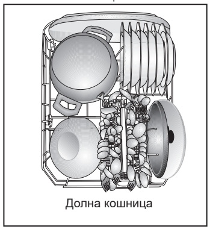

Подредете съдовете
- Отстранете едрите остатъци от храна.
-
Разпределете съдовете по кошниците.
- Долу сложете тежките чинии, тиганите и тенджерите.
- Горе сложете чашите и купичките с отвора надолу.
- Поставете ножовете с острието надолу или легнали. Проверете дали перките се въртят свободно.

Пример за подреждане на долната кошница
За тесните чаши изберете средата на кошницата. Обърнете и тенджерите с отвора надолу, за да се отцеди водата след миенето.